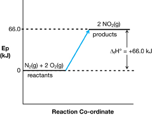

Module 2—Thinking Energy
 Explore
Explore
 Read
Read
In previous science courses you learned that chemical reactions occur as a result of colliding particles. To understand why a chemical reaction occurs and what events occur during a reaction, you may have to imagine a reaction in very slow motion.
Read pages 524–526 in the textbook to learn about the events that occur during a chemical reaction.
 Self-Check
Self-Check
SC 1. Complete “Practice” questions 1–3 on page 526 of the textbook.
Self-Check Answers
Contact your teacher if your answers vary significantly from the answers provided here.
SC 1.
Practice 1.
The molecules must have sufficient energy and be in the proper orientation when they collide. If these two conditions are met, a reaction can occur.
Practice 2.
Scientific: A better understanding of how chemical reactions occur might improve the ability to predict when chemical reactions might occur, including the effect that catalysts and other substances have on the progress of a reaction.
Technological: A better understanding of how chemical reactions occur may lead to the development of new processes that improve efficiency or reduce the generation of by-products.
Practice 3.
- N2(g) + 2 O2(g) → 2 NO2(g) ΔfHº = +66.4 kJ

- Answers may vary. The following hypotheses are possible answers:
-
The electrons or electrical field in the area of a lightning strike provide conditions that are favourable to initiating the reaction.
-
Electrons from the lightning may act as a catalyst.
-
Electrons or the electrical field from the lightning may ionize surrounding particles, allowing them to become catalysts in the chemical reaction between nitrogen and oxygen.
-
Read
So what does a spark really do in terms of starting a combustion reaction? In the previous section you learned that molecules must collide with sufficient energy to cause a reaction. From where do the molecules get that energy?
As you may have suspected, energy to initiate a combustion reaction can come from a spark, the flame from a match, or, in the case of a spontaneous combustion, from the heat of a hot day. Read the section “Activation Energy of a Reaction” on pages 526–530 in the textbook to learn more about the energy required to initiate a reaction.
 Try This
Try This
Answer the following question in which you will interpret and apply your textbook reading.
TR 1. It is a common observation that vapourized hydrocarbons combust more readily than liquid hydrocarbons. Use a potential energy diagram to compare the potential energy of a vapourized hydrocarbon to the potential energy of the same hydrocarbon in the liquid phase. In addition, use the difference in potential energy between the two phases to explain this observation and how it relates to energy of activation within a chemical system.
Save your response in your course folder and submit a copy to your teacher.
Self-Check
SC 2. Complete “Practice” questions 2–6 on page 531.

Self-Check
SC 3. Complete “Section 12.2” questions 1–3 on page 534. After completing the questions, ask yourself the following question: Is activation energy only required to initiate an exothermic reaction like a combustion of a hydrocarbon?
Self-Check Answers
Contact your teacher if your answers vary significantly from the answers provided here.
SC 3.
Section 12.2 1.
Bond energy is the energy required to break a chemical bond, and it is the energy released when a chemical bond is formed.
Section 12.2 2.
In the reactant molecules, if the bonds that are being broken are strong, the activation energy is likely to be high. If the bonds being broken are weak, it is likely that the activation energy will be relatively low.
Section 12.2 3.
By definition, a chemical reaction involves a rearrangement of bonds to produce new substances in which atoms are conserved but the bonding is different. This can only happen if at least some bonds are broken and new ones are formed. For example, in the decomposition of water, O-H bonds are broken and H-H and O=O bonds are formed.